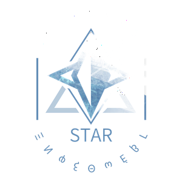
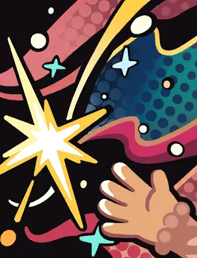
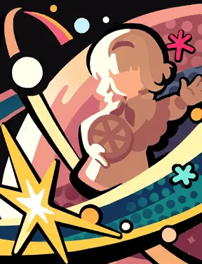
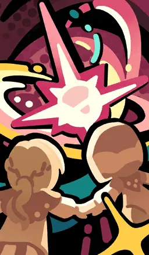

Skills



Mass attack. Deals 150 / 225% / 375% Mental DMG to 2 enemies; after the attack, consumes 2 Eureka to grant attack instance +1 to [Impromptu Incantation] for the round.
Mass buff. Grants a Shield with (Kiperina's ATK x150%) HP to all allies for 2 rounds; when actively cast, the Shield gains an additional 30% Shield Factor; and if a target is already holding a Shield, the value of this Shield is stacked on top of that target's existing Shield, up to a maximum Shield value of (Kiperina's ATK x650%) HP; for an ally holding this Shield, every 600 Shield HP value held grants Critical Rate +1.5% and DMG Bonus +1.2% to that ally.
Mass Debuff. Inflicts [Cosmic Radiation] on all enemies for 3 rounds. Dispels Stats Down, Neg Status, and [Control] statuses from all allies. Grants an additional 6 points of [Inspiration] to [Impromptu Incantation] for the round.